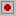

| Précédent:Affichage | Table des matières | Suivant: Lancer une commande Externe |
Notepad++ est capable d'enregistrer certaines des actions que vous effectuez lors de l'édition d'un document, et de les rejouer plus tard pour éviter d'avoir à répéter ces séquences d'actions. C'est ce qu'on appelle une macro et peut faire économiser beaucoup de temps. Une macro peut être jouée une fois ou plusieurs fois, même aussi longtemps que nécessaire pour parcourir un document entier. Vous pouvez les enregistrer pour une utilisation ultérieure et leurs assigner des touches raccourci pour un accès rapide (voir Raccourcis Claviers... ). Les macros sont sensibles à la position actuelle du curseur et s'appuient dessus.
Pour enregistrer une macro, sélectionnez ou appuyez sur le bouton  de la barre d'outils. Notepad++ va maintenant enregistrer les changements que vous apportez à un document et certaines autres actions que vous effectuez.
Pour arrêter l'enregistrement, sélectionnez ou sélectionnez le bouton sur la barre d'outils. Contrairement à la plupart des commandes, vous pouvez obtenir cet efet avec une combinaison spéciale de raccourci qui n'est pas répertoriée séparément dans le menu, mais uniquement dans le Raccourcis Claviers... (voir Paramètres) - par défaut, Ctrl-Shift-R.
Après l'arrêt de l'enregistrement, la macro sera placée dans une zone temporaire. Si vous n'avez pas effectué toutes les actions, ce tampon est effacé lors d'un nouvel enregistrement. Par contre, si vous commencez à enregistrer une autre macro sans sauvegarder votre travail plus tôt, il sera perdu.
Pour lire la macro dans la mémoire tampon, sélectionnez ou appuyez sur le bouton . Ceci effectuera la macro une fois à la
position actuelle.
. Ceci effectuera la macro une fois à la
position actuelle.